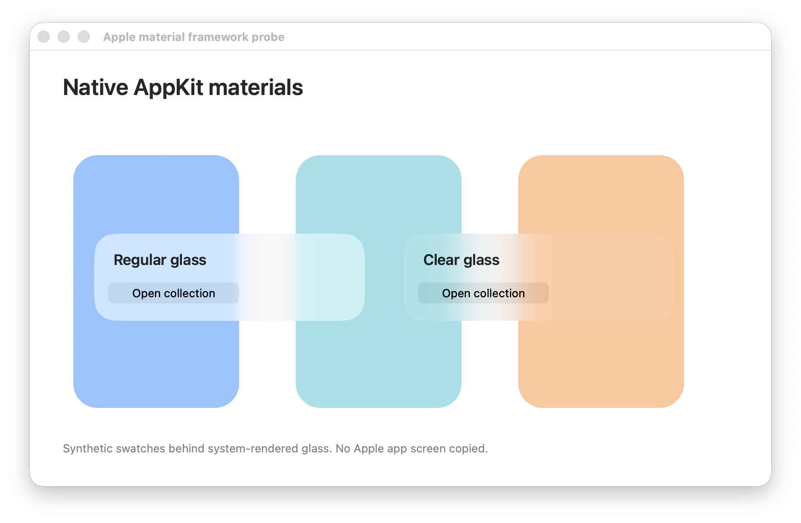

Apple framework / Native probe
System-rendered glass.
An authored AppKit test window on macOS 26.6.2. The system renders regular and clear glass over synthetic color swatches. This is not an extracted Apple app screen.

Compare the material roles and legibility with the browser study. Pixel equality and the private optical shader are not claimed.